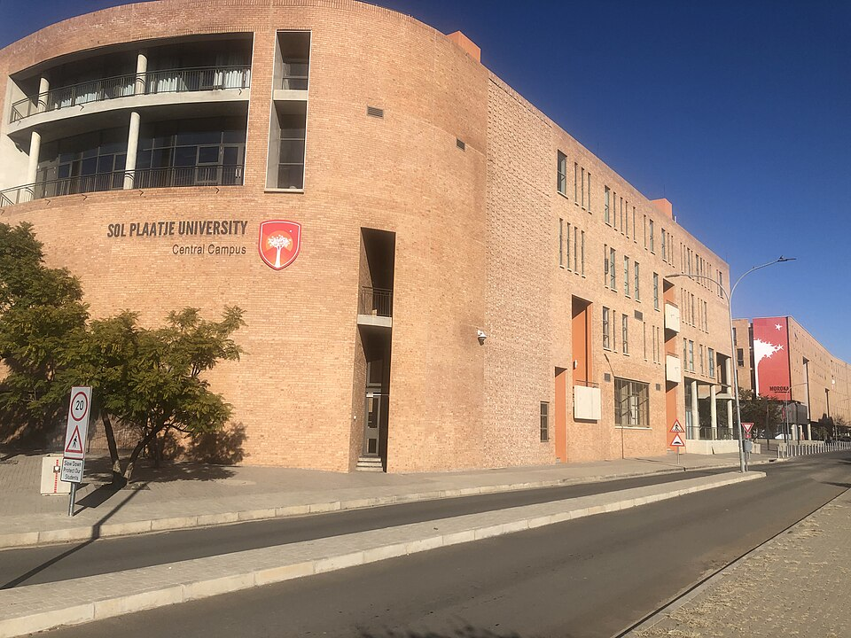

Centre For Global Change Symposium 2026
CALL FOR ABSTRACTS
Apply Now -> All Details Below
WHY APPLY?
The Centre for Global Change (CGC) at Sol Plaatje University is dedicated to advancing research on climate change, sustainability, and resilience. Through interdisciplinary work, the Centre contributes to understanding and addressing environmental challenges within local and global contexts. The CGC Symposium invites postgraduate students and researchers to submit abstracts for oral and poster presentations. This platform provides an opportunity to showcase research, engage with diverse audiences, and contribute to discussions on sustainable and resilient futures.


More Details
Venue: 150 Reservoir Road, South Campus Sol Plaatje University, New Park, Kimberley
Date: 3 September 2026
Time: 08:30 - 16:00
Abstract Submission Deadline: 30 June 2026 (just for example)
Registration Submission Deadline: 15 August 2026 (just for example)
Registration Fee: R150 (for all)(just for example)
FOLLOW THE INSTRUCTIONS BELOW FOR A SUCCESSFUL APPLICATION
Step 1
Click the button below to download the registration form
Save your document as a MS WORD (.docx), with your firstname and lastname on it. Like so : "jonh_doe.docx"
Attach your registration form to an email, and send it to this email address : cgcsymposium@gmail.com
⬇ Download Registration FormStep 3
Replace the existing information in the template with your own details. DO NOT CHANGE THE TEMPLATE'S FORMAT
Save your document as a MS WORD (.docx), with your firstname and lastname on it. Like so : "jonh_doe.docx"
Attach your abstract form to an email, and send it to this email address : cgcsymposium@gmail.com